Токио · Маруноути · отель
The Tokyo Station Hotel: ночь внутри краснокирпичного вокзала
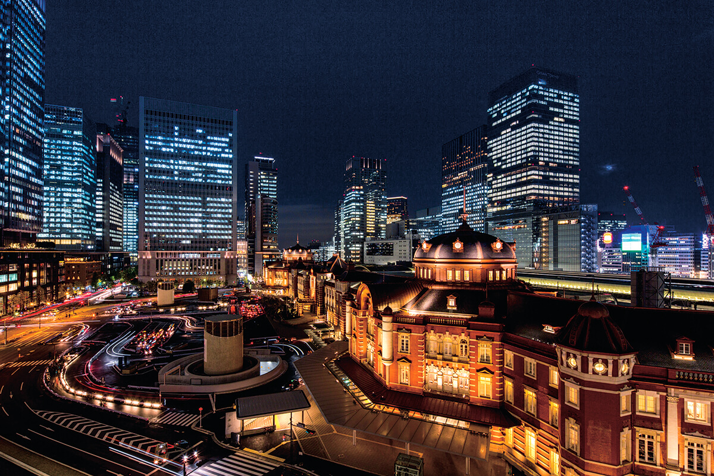
Отель The Tokyo Station Hotel занимает часть краснокирпичного здания вокзала Токио, главных ворот столицы. В 2015 году ему исполнилось сто лет. Здесь останавливались известные писатели, а из некоторых номеров видно, как внизу спешат пассажиры.
История
Сто лет на вокзале
Отель открылся в 1915 году, через год после самого вокзала Токио, и больше века живёт в центре города. Его история складывалась в эпохи Тайсё, Сёва и Хэйсэй и держится на людях, которые в разное время здесь работали: одни закладывали основы, другие задавали направление.
Среди японских отелей старой школы краснокирпичное здание вокзала со стороны Маруноути стоит особняком. Тонкая резьба, купола над залами, где пассажиры проходят через турникеты: всё это восстановлено, но, кажется, выглядит даже изящнее, чем при постройке. Под потолками южного и северного куполов закреплены рельефы орлов.
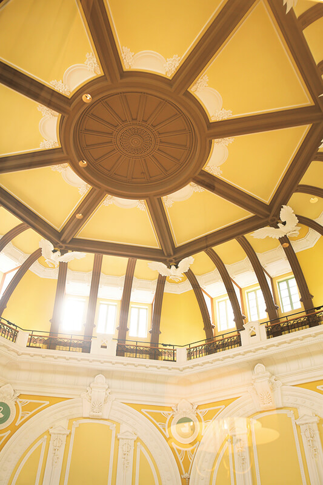
Большая реставрация длилась шесть с половиной лет. В октябре 2012 года отель снова открыл двери, с праздником и множеством гостей, а в ноябре 2015 года отметил столетие.
Память о прошлом здесь не спрятали, а встроили в интерьер. С архивных балконов, одного в северном куполе и двух в южном, вблизи видны восстановленные своды и рельефы на стенах и колоннах. В коридорах висят картины с оживлённой привокзальной улицей былых времён. Отель похож на шкатулку, полную истории.
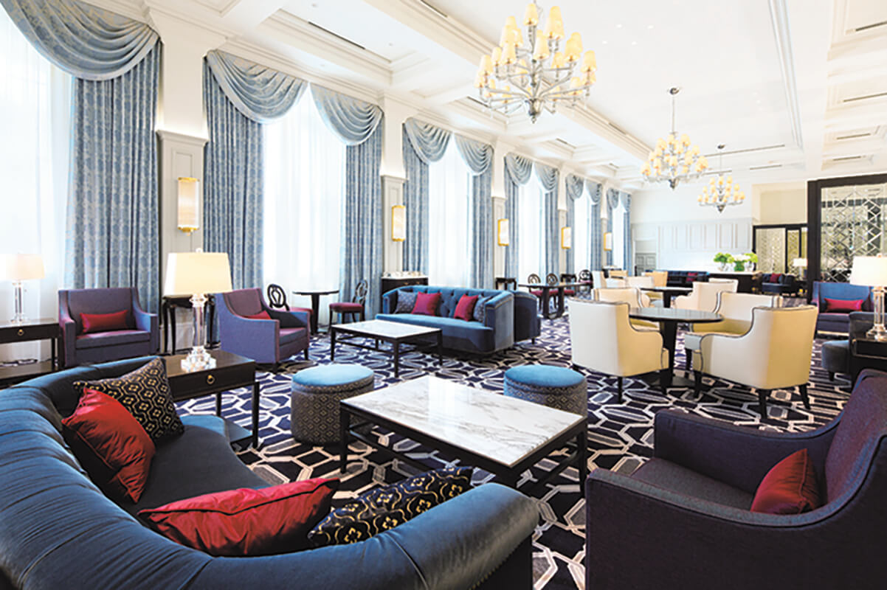
Номера
Путешествие, не выходя из комнаты
Отель занимает часть здания от подвала до четвёртого этажа, примерно половину всей площади вокзала. Номера, в 2019 году их было 150, находятся со второго по четвёртый этаж. Они выдержаны в землистых тонах, а рисунок штор и ковров добавляет строгой элегантности.
Многие мелочи напоминают о писателях, железной дороге и вокзале. На рабочем столе и прикроватной тумбочке лежат блокноты, расчерченные в клетку, как японская бумага для рукописей: так отель отдаёт должное литераторам, которые любили здесь жить.
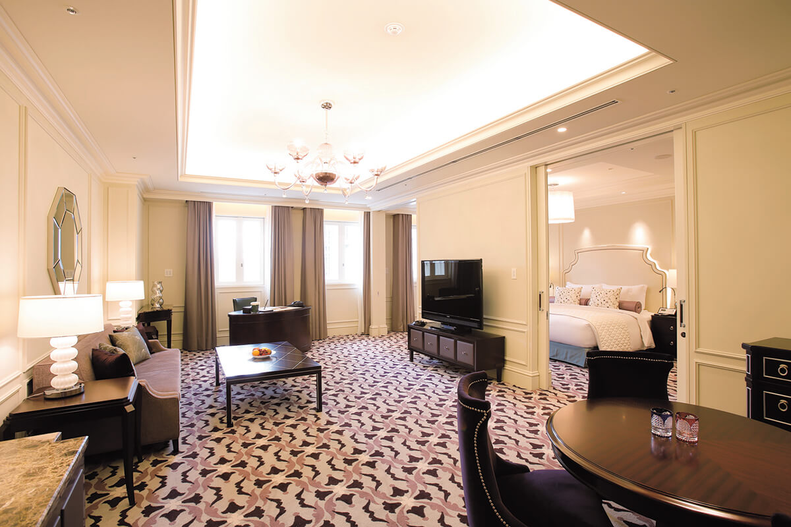
Удобство номера зависит не только от нового оборудования и продуманной планировки. Важны мебель, отделка, внимательно подобранные мелочи и прежде всего искреннее желание позаботиться о госте.
Особенно популярны 28 номеров «Доум-сайд»: они идут вдоль восстановленных южного и северного куполов, и из окон можно смотреть сверху на зал под сводом. Внизу идут путешественники с чемоданами, люди спешат на работу, а лепнина купола оказывается совсем рядом. Любителям путешествий и поездов от такого вида трудно оторваться.
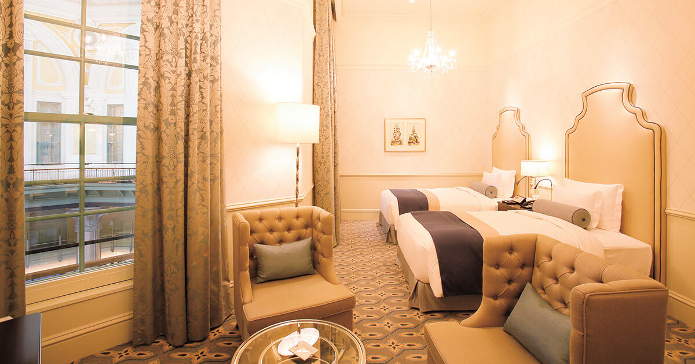
Автор этих строк когда-то жила во Франции и Швейцарии, и здесь ей каждый раз вспоминаются вокзальные гостиницы Европы с вывеской «Hotel de la Gare». В поездке по чужой стране, особенно в одиночку, нет ничего надёжнее: приезжаешь на вокзал, а гостиница уже ждёт. Вокзальный отель не похож на роскошные гостиницы мегаполиса, но тёплый приём роднит его с теми европейскими станционными гостиницами. Связь вокзала и ночлега кажется самой первой формой гостеприимства для путешественника.
Литература
В мире романов о поездах
Отель любили многие писатели, и в книгах о поездах и вокзалах он не раз становился местом действия. У каждого гостя здесь своя история.
Самая известная связана с Сэйтё Мацумото (1909–1992), мастером японского детектива. В коридоре у номера, где он останавливался (в 2019 году это был номер 2033), висят копия первой страницы романа «Точки и линии», который выходил частями, и копия расписания экспресса «Асакадзэ», в котором разворачивается действие книги. Поклонники писателя, железной дороги и самого отеля легко переносятся здесь в мир романа.
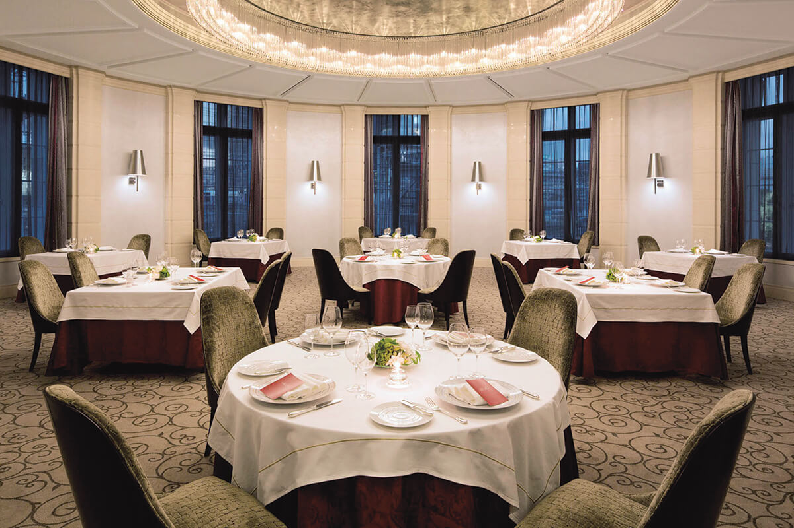
Завтрак
Atrium под стеклянной крышей
Завтрак для живущих в отеле подают в лаунже Atrium. Когда отель открылся после реставрации в 2012 году, огромный чердак в центре вокзального здания, объекта важного культурного наследия Японии, накрыли стеклянными окнами в крыше и превратили в новое пространство отеля.
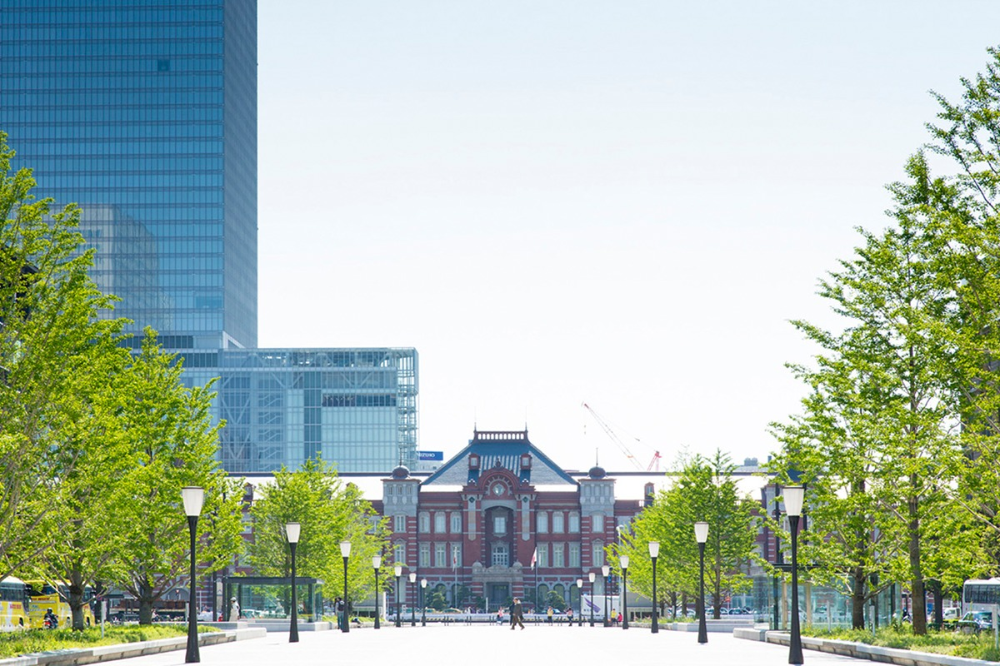
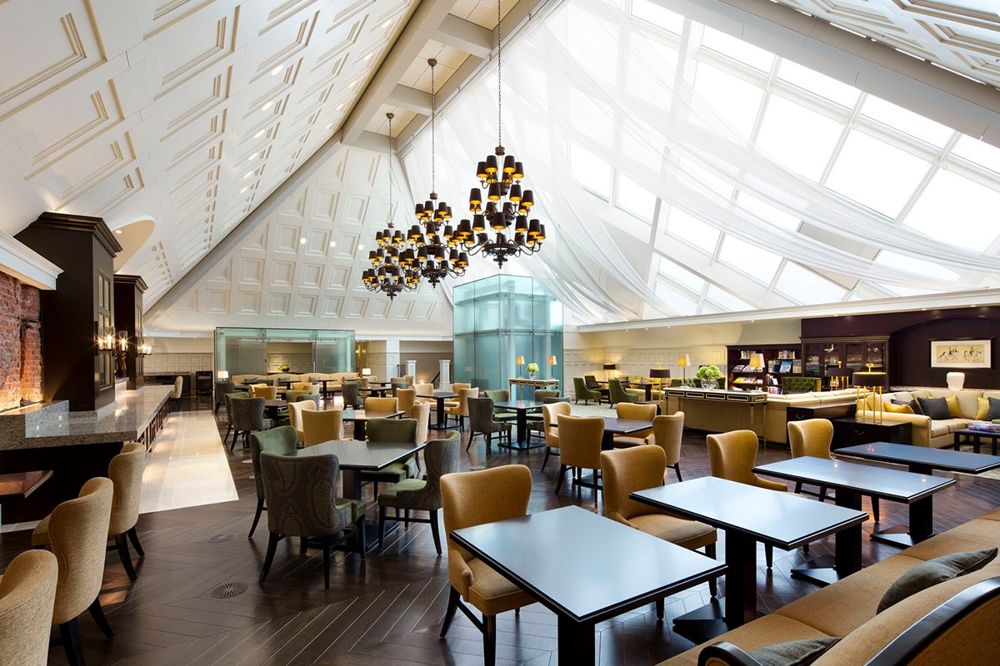
Шведский стол Atrium хвалят: в рейтинге 20 лучших гостиничных завтраков Японии по версии сайта TripAdvisor он оказался единственным из отелей Токио. Шеф-повар отеля верен одной идее: вкусный завтрак, который не надоест, сколько ни приезжай. Блюд больше ста.
В марте 2020 года из-за пандемии шведский стол закрыли, и 1 июля 2020 года он вернулся в новом формате: с усиленной гигиеной под надзором специалистов, с порционной раскладкой вместо общих щипцов. Тогда же точек, где повара готовят при гостях, стало четыре вместо одной: омлеты, эгг-бенедикт, японские блюда, сладости и напитки. По желанию к столу приносили рис, только что сваренный в глиняном горшке донабэ.
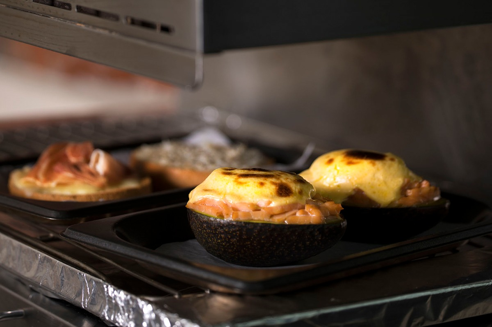
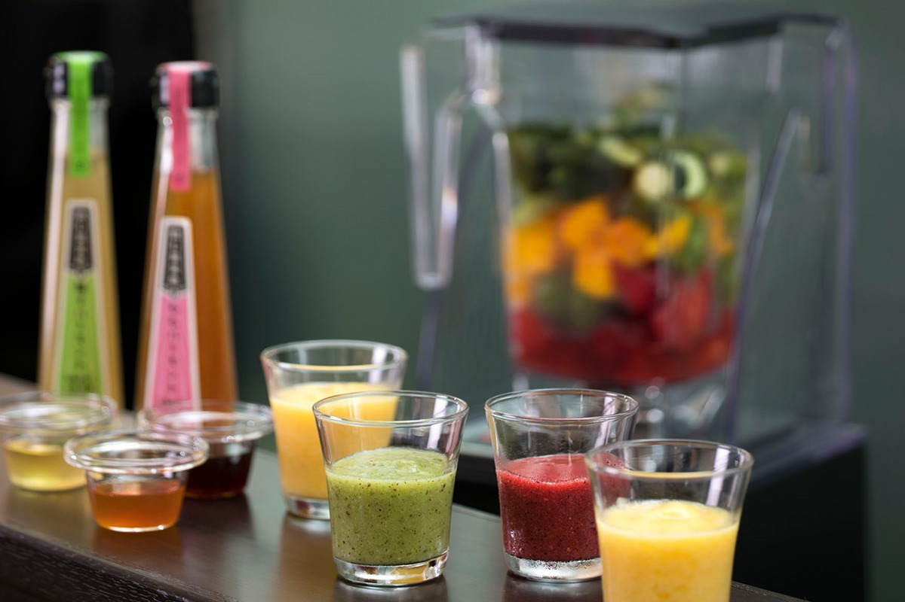
Смузи делают при гостях, и апельсиновый сок тоже выжимают у стойки. Один из овощей или фруктов меняют каждую неделю, так что вкусы не повторяются.
Среди новых блюд 2020 года был французский тост «гратинэ»: его запекают под ванильным соусом сабайон и украшают свежими фруктами. В уголке, посвящённом Эдо и Токио, тогда варили «юкигэ-мэси», рисовую кашу, которую, по преданию, любили в эпоху Эдо: рис и тофу из органической сои томят в бульоне из комбу и кацуобуси и едят с тёртым дайконом. Мягкий вкус как раз для утра.
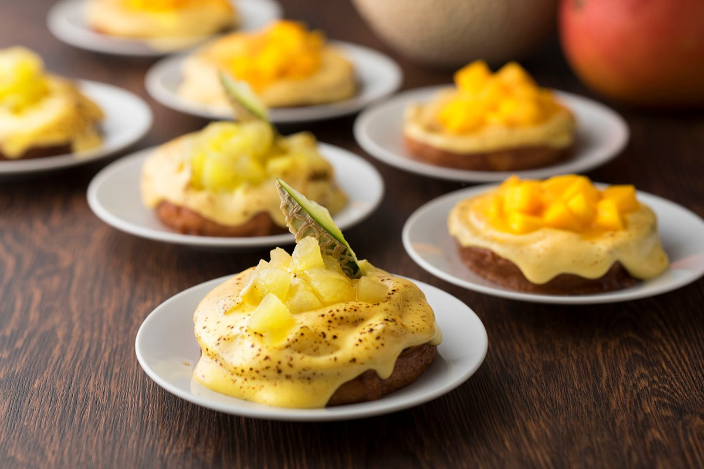
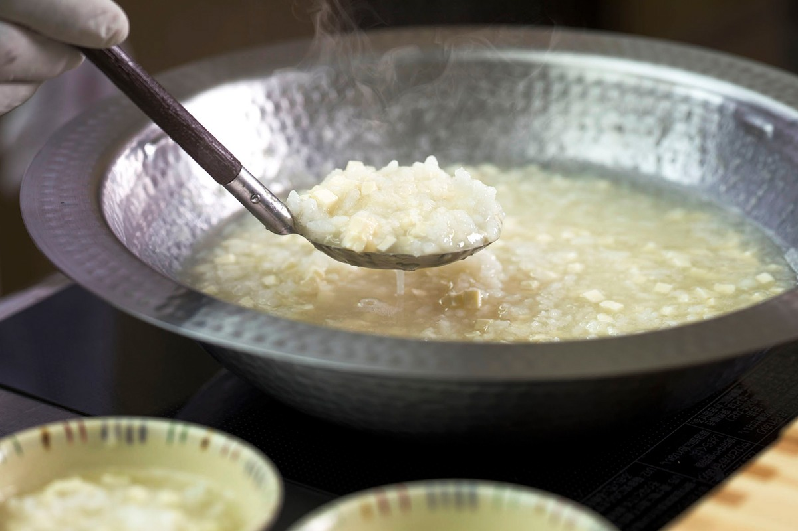
The Tokyo Station Hotel
- Адрес
- Токио, Тиёда, Маруноути, 1-9-1
- Телефон
- +81 3-5220-1111
- Номера
- 150 (классические, «Палас-сайд», «Доум-сайд», мезонеты, джуниор-сюиты, сюиты, «Империал-сюит»)
- Заезд / выезд
- 15:00 / 12:00
- Цены / Вход
- от 37 832 иен с налогом и сервисным сбором, без гостиничного налога; завтрак в Atrium для гостей отеля 4500 иен, для детей младшего школьного возраста и младше 2250 иен (с налогом, без сервисного сбора)
- Часы работы
- Atrium 6:30–11:00 (последний заказ 10:30)
- Как добраться
- выход из вокзала Токио (JR) Маруноути-Южный ведёт прямо в отель
Фото: Юити Ногути.